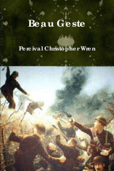

- Home
- Browse
Drama Stories
Read the stories we love
 Beau Gesteby Percival Christopher Wren
Ratings
Set in the years before World War I, Wren’s novel depicts life in the French Foreign Legion fairly accurately. The Geste brothers, led by eldest Michael (known by his nickname Beau), enlist in the Foreign Legion as a way of following their old-fashioned ideals of “doing the right thing,” and this act is the ultimate beau geste of the story—a fine act that leads to nothing. Desert battles, cruel commanders, and plenty of adventure follow, however, so maybe it’s not all for nothing.Lost Horizonby James Hilton
Ratings
The origin of the term “Shangri-La,” this story of a hidden monastery in the mountains of Tibet where the aging process slows and a lifetime of study and contemplation offers hope to a world ruined by war is still a gripping tale nearly a century later. Conan the Conqueror
Conan the Conqueror
by Robert E. Howard
Ratings
The only novel-length Conan story Howard published, this was originally titled The Hour of the Dragon and begins with a middle-aged Conan defeated on the battlefield and imprisoned in a dungeon filled with monstrous threats. His defeat secured via dark magic, Conan must seek unlikely allies and fight (and fight, and fight) his way back to his people in order to reclaim his throne.The Guns Of Navaroneby Alistair Maclean
Ratings
The Nazis have built a nearly-impregnable fortress on the Greek island of Navaronne, and it’s preventing the rescue of more than a thousand British troops. A team of ultra-competent, experienced soldiers must come together and find a way to destroy the guns so the rescue can be attempted.The Warriorsby Sol Yurick
Ratings
You might not think of this trailblazing 1965 novel (the inspiration for the famous 1979 film) as an adventure story, but that’s exactly what it is. The Coney Island Warriors are a street gang who find themselves stranded in enemy territory one night after a chaotic meeting of New York Gangs.Master And Commander
by Patrick O’Brian
Ratings
Another absolute classic set during the Napoleonic Wars, O’Brian follows the careers of Captain Jack Aubrey and physician-slash-spy Stephen Maturin as they battle the French in progressively larger ships of the line. O’Brian’s detailed and accurate depiction of the misery of life in the British navy at the time is fascinating, and the battle sequences are some of the best ever committed to the page. Congo
Congo
by Michael Crichton
Ratings
Although described as science fiction, Crichton himself name-checked King Solomon’s Mines as inspiration for this story. A lost city in the jungle of Africa, a legendary diamond mine, and a heretofore unknown breed of gorilla resulting from ancient experiments all come together to challenge a team seeking to claim a fortune that has already killed a lot of people.Saharaby Clive Cussler
Ratings
Cussler is probably the king of the modern adventure novel, and Sahara remains his best effort. Combining Abraham Lincoln and a Civil War-era ironside ship, the crash and disappearance of an Amelia Earhart-like pilot in 1933, a secret gold mine and a terrifying pollutant that threatens the entire world’s ecosystem, Cussler doesn’t let you have even a moment to breathe, but you won’t notice because it’s all so much fun.LeMorte d'arthurby Sir Thomas Malory
Ratings
King Arthur and the Knights of the Round Table are cultural icons—which means they’re often treated as cultural furniture, always there but not terribly interesting. This book, the original compilation and rewriting of the existing stories, will remind you that at their heart these are adventure stories Sharpe's Tiger
Sharpe's Tiger
by Bernard Cornwell
Ratings
Cornwell’s Sharpe novels explore the land war against Napoleon from the point of view of Richard Sharpe, the low-born soldier who slowly rises through the ranks of the British Army. This sort of rise wasn’t impossible at the time—but it was pretty unlikely, and only Sharpe’s wit and skill with violence makes it possible.